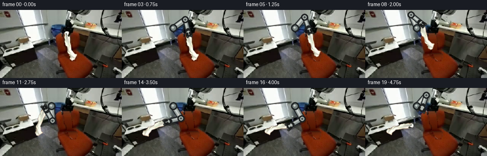
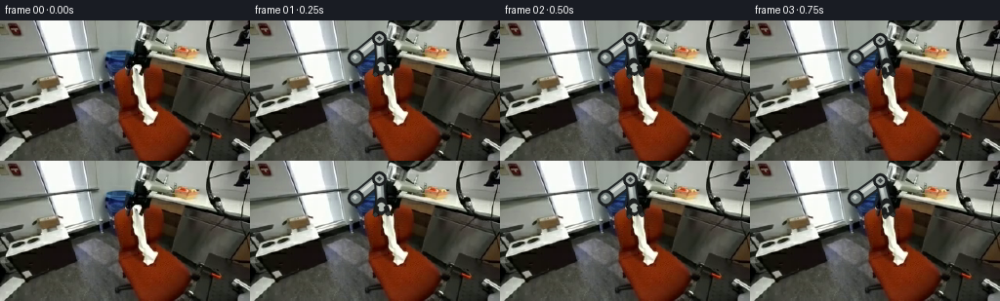
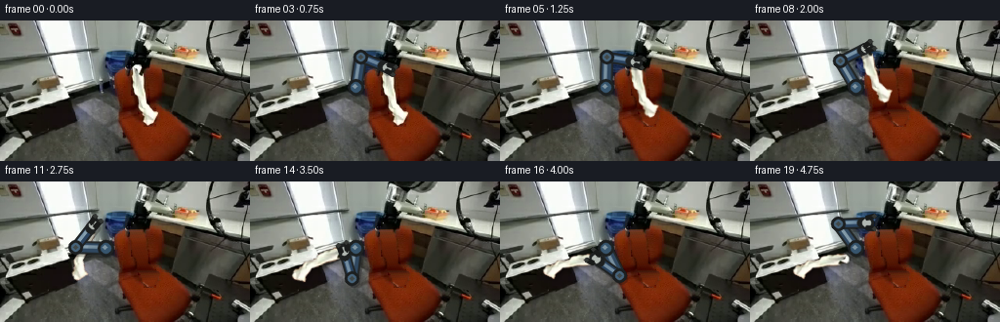
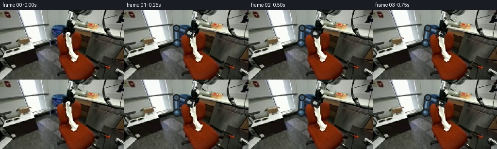

CODING AGENTS AS PIXEL WORLD MODELS
traex/GPT-5.6-Sol · common50_0011
点击播放 · 原生 RGB 像素
逐轮保存的候选
回放视频、检查图与代码变化。
每份候选均可单独播放。实际图片检查记录在下方工具轨迹中。
候选 01播放与检查图
点击播放 · 原生 RGB 像素


展开代码变化
--- 上一保存版本
+++ 本次保存版本
@@ -0,0 +1,185 @@
+from pathlib import Path
+import math
+import cv2
+import numpy as np
+from PIL import Image
+import artifact_io
+
+ROOT = Path(__file__).resolve().parent
+src = np.asarray(Image.open(ROOT / "first_frame.png").convert("RGB"), dtype=np.uint8)
+H, W = src.shape[:2]
+
+# The cloth is the light, folded strip hanging down the middle of the orange chair.
+# A hand traced silhouette is combined with a conservative neutral/light color key so
+# the chair itself is never carried along with the cloth.
+poly = np.array([
+ [134,44],[141,43],[147,47],[150,56],[150,72],[153,83],
+ [163,91],[164,98],[160,104],[154,106],[148,102],[145,96],
+ [140,89],[137,80],[134,70],[133,57]
+], np.int32)
+roi = np.zeros((H,W), np.uint8)
+cv2.fillPoly(roi, [poly], 255)
+f = src.astype(np.int16)
+mean = f.mean(2)
+chroma = f.max(2) - f.min(2)
+# Include white, cream, and the shaded gray folds, while rejecting saturated orange.
+neutral = ((mean > 88) & (chroma < 72) & (f[:,:,1] > f[:,:,0]*0.68) &
+ (f[:,:,2] > f[:,:,0]*0.58)).astype(np.uint8)*255
+cloth_mask = cv2.bitwise_and(roi, neutral)
+# Preserve a continuous physical sheet and its softly shaded boundary.
+cloth_mask = cv2.morphologyEx(cloth_mask, cv2.MORPH_CLOSE, np.ones((5,5),np.uint8), iterations=2)
+cloth_mask = cv2.bitwise_and(cloth_mask, roi)
+cloth_mask = cv2.GaussianBlur(cloth_mask, (3,3), .55)
+
+# Background plate: remove the cloth and reconstruct the occluded orange upholstery.
+# Telea supplies local structure; an orange color estimate from both sides of each row
+# corrects the otherwise pale middle of this comparatively large hole.
+hard = (cloth_mask > 24).astype(np.uint8)*255
+hard = cv2.dilate(hard, np.ones((3,3),np.uint8), iterations=1)
+bgr = cv2.cvtColor(src, cv2.COLOR_RGB2BGR)
+plate = cv2.cvtColor(cv2.inpaint(bgr, hard, 5, cv2.INPAINT_TELEA), cv2.COLOR_BGR2RGB)
+# Build row-wise chair estimates from nearby, strongly orange pixels.
+for y in range(43,108):
+ xs = np.r_[np.arange(118,134), np.arange(165,184)]
+ vals = src[y, xs].astype(np.float32)
+ ok = (vals[:,0] > vals[:,1]*1.65) & (vals[:,0] > vals[:,2]*2.1) & (vals[:,0] > 55)
+ if np.any(ok):
+ col = np.median(vals[ok], axis=0)
+ yy, xx = np.where((hard > 0) & (np.indices(hard.shape)[0] == y))
+ if len(xx):
+ # Subtle deterministic grain copied from neighboring chair material.
+ grain = ((xx*13 + y*7) % 9 - 4)[:,None].astype(np.float32)
+ val = np.clip(col[None,:] + grain*np.array([[1.0,.35,.15]]),0,255)
+ plate[yy,xx] = (.78*val + .22*plate[yy,xx]).astype(np.uint8)
+# Feather only the reconstructed patch edge into the untouched source.
+edge_alpha = cv2.GaussianBlur(hard, (5,5), 1.0).astype(np.float32)/255
+plate = np.clip(src*(1-edge_alpha[...,None]) + plate*edge_alpha[...,None],0,255).astype(np.uint8)
+
+# Premultiplied cloth layer, allowing high quality affine resampling.
+a = cloth_mask.astype(np.float32)/255.0
+premul = src.astype(np.float32)*a[...,None]
+GRASP = np.array([140.0, 48.0], np.float32)
+
+def ease(t):
+ t = float(np.clip(t,0,1))
+ return t*t*(3-2*t)
+
+def transform_layer(frame, endpoint, angle, scale=1.0, shadow=False):
+ """Move the cloth rigidly at its grasp point; cloth folds remain stable."""
+ c, s = math.cos(math.radians(angle))*scale, math.sin(math.radians(angle))*scale
+ A = np.array([[c,-s],[s,c]], np.float32)
+ trans = np.asarray(endpoint,np.float32) - A @ GRASP
+ M = np.array([[A[0,0],A[0,1],trans[0]],[A[1,0],A[1,1],trans[1]]], np.float32)
+ wa = cv2.warpAffine(a, M, (W,H), flags=cv2.INTER_LINEAR, borderMode=cv2.BORDER_CONSTANT)
+ wp = cv2.warpAffine(premul, M, (W,H), flags=cv2.INTER_LINEAR, borderMode=cv2.BORDER_CONSTANT)
+ if shadow:
+ sh = cv2.GaussianBlur(wa,(0,0),2.1)
+ sh = np.roll(np.roll(sh,3,0),2,1)*0.28
+ frame[:] = np.clip(frame.astype(np.float32)*(1-sh[...,None]),0,255).astype(np.uint8)
+ good = wa > .015
+ out = np.zeros_like(frame,dtype=np.float32)
+ out[good] = wp[good] / np.maximum(wa[good,None],.015)
+ frame[:] = np.clip(frame*(1-wa[...,None]) + out*wa[...,None],0,255).astype(np.uint8)
+ return wa
+
+def line_rgba(layer, p1, p2, color, width, alpha=255):
+ cv2.line(layer, tuple(np.round(p1).astype(int)), tuple(np.round(p2).astype(int)),
+ tuple(color)+(alpha,), width, cv2.LINE_AA)
+
+def circle_rgba(layer, p, r, color, alpha=255):
+ cv2.circle(layer, tuple(np.round(p).astype(int)), r, tuple(color)+(alpha,), -1, cv2.LINE_AA)
+
+def blend_rgba(rgb, layer):
+ aa = layer[:,:,3:4].astype(np.float32)/255
+ rgb[:] = np.clip(rgb*(1-aa)+layer[:,:,:3]*aa,0,255).astype(np.uint8)
+
+def arm_geometry(wrist):
+ """Two-link inverse kinematics with exactly fixed 31/29 pixel links."""
+ shoulder = np.array([108.0, 38.0])
+ p = np.asarray(wrist,float)
+ v = p-shoulder
+ d = np.linalg.norm(v)
+ L1,L2 = 31.0,29.0
+ d2 = float(np.clip(d, abs(L1-L2)+.01, L1+L2-.01))
+ u = v/(d+1e-8)
+ along = (L1*L1-L2*L2+d2*d2)/(2*d2)
+ height = math.sqrt(max(0,L1*L1-along*along))
+ perp = np.array([-u[1],u[0]])
+ # Elbow-up branch keeps the arm above the carried fabric and clear of the chair.
+ elbow = shoulder + u*along - perp*height
+ return shoulder, elbow, p
+
+def draw_arm(rgb, wrist, grip_open, opacity=1.0):
+ shoulder, elbow, wrist = arm_geometry(wrist)
+ lay = np.zeros((H,W,4),np.uint8)
+ op = int(255*opacity)
+ # Soft cast shadow gives links a physical presence in the fixed workspace.
+ line_rgba(lay, shoulder+[2,3], elbow+[2,3], (10,12,14), 12, int(op*.28))
+ line_rgba(lay, elbow+[2,3], wrist+[2,3], (10,12,14), 10, int(op*.28))
+ # Rigid anodized metal links: dark rims, warm-gray body, narrow specular stripe.
+ line_rgba(lay, shoulder, elbow, (35,39,40), 12, op)
+ line_rgba(lay, shoulder, elbow, (151,160,157), 8, op)
+ line_rgba(lay, shoulder+[-1,-1], elbow+[-1,-1], (218,222,215), 2, int(op*.9))
+ line_rgba(lay, elbow, wrist, (31,35,36), 10, op)
+ line_rgba(lay, elbow, wrist, (139,149,147), 6, op)
+ line_rgba(lay, elbow+[-1,-1], wrist+[-1,-1], (211,217,211), 2, int(op*.85))
+ # Bearings and fixed-size joint collars.
+ circle_rgba(lay, shoulder, 8, (29,33,34), op)
+ circle_rgba(lay, shoulder, 5, (119,130,128), op)
+ circle_rgba(lay, shoulder+[-1,-1], 2, (213,218,211), int(op*.9))
+ circle_rgba(lay, elbow, 7, (28,31,32), op)
+ circle_rgba(lay, elbow, 4, (166,174,169), op)
+ circle_rgba(lay, elbow, 2, (65,72,72), op)
+ # Wrist housing. Its jaws point across the top hem of the cloth.
+ d = wrist-elbow; d /= np.linalg.norm(d)+1e-6
+ n = np.array([-d[1],d[0]])
+ line_rgba(lay,wrist-d*5,wrist+d*3,(30,33,33),9,op)
+ circle_rgba(lay,wrist,4,(177,184,178),op)
+ gap = 5.0 if grip_open else 2.8
+ for sign in (-1,1):
+ root = wrist + n*sign*gap
+ tip = root + d*8 + n*sign*1.5
+ line_rgba(lay,root,tip,(25,27,26),3,op)
+ circle_rgba(lay,tip,2,(52,55,52),op)
+ blend_rgba(rgb,lay)
+ return wrist, d, n
+
+# Keyframes: approach, pinch, lift clear of the chair, carry, lay on the counter,
+# release, and retract. Endpoint is the gripper center and therefore the cloth hem.
+keys = {
+ 0:(132,47,0), 1:(134,47,0), 2:(137,48,0), 3:(140,48,0), 4:(140,48,0),
+ 5:(138,42,-3), 6:(133,35,-7), 7:(126,30,-10), 8:(118,28,-7),
+ 9:(109,31,2), 10:(101,36,15), 11:(95,44,31), 12:(91,53,47),
+ 13:(92,62,62), 14:(96,71,77), 15:(98,78,88), 16:(98,79,90),
+ 17:(103,68,90), 18:(111,54,90), 19:(119,42,90)
+}
+
+frames=[]
+for i in range(20):
+ if i == 0:
+ frames.append(src.copy())
+ continue
+ x,y,ang = keys[i]
+ endpoint = np.array([x,y],np.float32)
+ # Before lifting, retain the original cloth and untouched exact scene.
+ if i <= 4:
+ fr = src.copy()
+ cloth_alpha_now = None
+ else:
+ fr = plate.copy()
+ # At and after release (16), the cloth remains lying flat on the counter.
+ if i >= 16:
+ cloth_endpoint=np.array([98,79],np.float32); cloth_angle=90
+ cloth_alpha_now=transform_layer(fr,cloth_endpoint,cloth_angle,.94,shadow=True)
+ else:
+ cloth_alpha_now=transform_layer(fr,endpoint,ang,1.0,shadow=(i>=14))
+ # Stable, rigid robot motion. At the start it emerges naturally from the visible
+ # machine shoulder; fingers close during grasp, then open for release.
+ opening = 1.0 if i < 3 else (0.0 if i <= 15 else 1.0)
+ draw_arm(fr, endpoint, opening, opacity=1.0)
+ frames.append(fr)
+
+frames=np.stack(frames).astype(np.uint8)
+assert np.array_equal(frames[0],src)
+artifact_io.save(frames, ROOT)
+print('saved',frames.shape,'cloth pixels',int((cloth_mask>20).sum()))
候选 02播放与检查图
点击播放 · 原生 RGB 像素


展开代码变化
--- 上一保存版本
+++ 本次保存版本
@@ -95,12 +95,18 @@
def arm_geometry(wrist):
"""Two-link inverse kinematics with exactly fixed 31/29 pixel links."""
- shoulder = np.array([108.0, 38.0])
+ # This coincides with the blue base/bearing already visible in the input.
+ shoulder = np.array([108.0, 68.0])
p = np.asarray(wrist,float)
v = p-shoulder
d = np.linalg.norm(v)
L1,L2 = 31.0,29.0
d2 = float(np.clip(d, abs(L1-L2)+.01, L1+L2-.01))
+ # Solve toward the reachable target if a stylized keyframe lies a fraction
+ # beyond the exact two-link radius.
+ p = shoulder + v/(d+1e-8)*d2
+ v = p-shoulder
+ d = d2
u = v/(d+1e-8)
along = (L1*L1-L2*L2+d2*d2)/(2*d2)
height = math.sqrt(max(0,L1*L1-along*along))
@@ -116,19 +122,20 @@
# Soft cast shadow gives links a physical presence in the fixed workspace.
line_rgba(lay, shoulder+[2,3], elbow+[2,3], (10,12,14), 12, int(op*.28))
line_rgba(lay, elbow+[2,3], wrist+[2,3], (10,12,14), 10, int(op*.28))
- # Rigid anodized metal links: dark rims, warm-gray body, narrow specular stripe.
+ # Rigid blue anodized links match the mechanism visible in frame zero: dark
+ # rims, a desaturated navy body, and a narrow cool specular stripe.
line_rgba(lay, shoulder, elbow, (35,39,40), 12, op)
- line_rgba(lay, shoulder, elbow, (151,160,157), 8, op)
- line_rgba(lay, shoulder+[-1,-1], elbow+[-1,-1], (218,222,215), 2, int(op*.9))
+ line_rgba(lay, shoulder, elbow, (48,72,96), 8, op)
+ line_rgba(lay, shoulder+[-1,-1], elbow+[-1,-1], (126,151,168), 2, int(op*.9))
line_rgba(lay, elbow, wrist, (31,35,36), 10, op)
- line_rgba(lay, elbow, wrist, (139,149,147), 6, op)
- line_rgba(lay, elbow+[-1,-1], wrist+[-1,-1], (211,217,211), 2, int(op*.85))
+ line_rgba(lay, elbow, wrist, (43,68,96), 6, op)
+ line_rgba(lay, elbow+[-1,-1], wrist+[-1,-1], (117,147,170), 2, int(op*.85))
# Bearings and fixed-size joint collars.
circle_rgba(lay, shoulder, 8, (29,33,34), op)
- circle_rgba(lay, shoulder, 5, (119,130,128), op)
- circle_rgba(lay, shoulder+[-1,-1], 2, (213,218,211), int(op*.9))
+ circle_rgba(lay, shoulder, 5, (55,85,109), op)
+ circle_rgba(lay, shoulder+[-1,-1], 2, (142,165,178), int(op*.9))
circle_rgba(lay, elbow, 7, (28,31,32), op)
- circle_rgba(lay, elbow, 4, (166,174,169), op)
+ circle_rgba(lay, elbow, 4, (70,99,122), op)
circle_rgba(lay, elbow, 2, (65,72,72), op)
# Wrist housing. Its jaws point across the top hem of the cloth.
d = wrist-elbow; d /= np.linalg.norm(d)+1e-6
可观测工具轨迹
实际执行的命令与返回图片。
命令 1exit 127
/bin/bash -lc "ls -la && printf '\\n--- prompt.txt ---\\n' && cat prompt.txt && printf '\\n--- GENERATION_RULES.md ---\\n' && cat GENERATION_RULES.md && printf '\\n--- file info ---\\n' && file first_frame.png"
命令 2exit 0
/bin/bash -lc "cat task_spec.json && python - <<'PY'
from PIL import Image
im=Image.open('first_frame.png')
print(im.mode, im.size)
import numpy as np
x=np.array(im)
print(x.shape,x.dtype,x.min(),x.max(),x.mean((0,1)))
# most common colors
from collections import Counter
for c,n in Counter(map(tuple,x.reshape(-1,3))).most_common(20): print(c,n)
PY"命令 3exit 0
/bin/bash -lc "python - <<'PY'
import cv2, numpy as np
from PIL import Image
x=np.array(Image.open('first_frame.png'))
print('cv2',cv2.__version__)
# kmeans LAB/RGB 12
z=x.reshape(-1,3).astype(np.float32)
crit=(cv2.TERM_CRITERIA_EPS+cv2.TERM_CRITERIA_MAX_ITER,100,.2)
_,lab,cen=cv2.kmeans(z,14,None,crit,10,cv2.KMEANS_PP_CENTERS)
lab=lab.reshape(x.shape[:2]); cen=cen.astype(int)
for i,c in enumerate(cen):
ys,xs=np.where(lab==i); print(i,c,'n',len(xs),'bbox',xs.min(),ys.min(),xs.max(),ys.max(),'meanxy',round(xs.mean()),round(ys.mean()))
# coarse map 4x4 majority labels, map sorted luminance/color assign chars manually index chars
chars='0123456789ABCD'
for yy in range(0,144,4):
print(''.join(chars[np.bincount(lab[yy:yy+4,xx:xx+4].ravel(),minlength=14).argmax()] for xx in range(0,256,4)))
PY"命令 4exit 1
/bin/bash -lc "python - <<'PY'
import cv2,numpy as np
from PIL import Image
x=np.array(Image.open('first_frame.png'))
# summaries 16x12 grid mean rgb
for y in range(0,144,12):
print('Y',y)
for xx in range(0,256,16):
a=x[y:y+12,xx:xx+16].mean((0,1)).astype(int)
print('%02x%02x%02x'%tuple(a),end=' ')
print()
# components thresholds
masks={
'white':np.all(x>210,2),
'brightneutral':(x.mean(2)>170)&((x.max(2)-x.min(2))<25),
'orange':(x[:,:,0]>80)&(x[:,:,0]>x[:,:,1]*1.8)&(x[:,:,1]>x[:,:,2]*1.3),
'tan':(x[:,:,0]>130)&(x[:,:,0]>x[:,:,1]*1.15)&(x[:,:,1]>x[:,:,2]*1.15),
'black':x.mean(2)<28,
}
for name,m in masks.items():
n,lab,st,cent=cv2.connectedComponentsWithStats(m.astype('uint8'))
print('\\n',name,m.sum())
for s,c in sorted(zip(st[1:],cent[1:]),key=lambda z:-z[0,4])[:15]: print(s.tolist(), c.round(1).tolist())
PY"命令 5exit 0
/bin/bash -lc "python - <<'PY'
import cv2,numpy as np
from PIL import Image
x=np.array(Image.open('first_frame.png'))
masks={
'white':np.all(x>210,2),
'brightneutral':(x.mean(2)>170)&((x.max(2)-x.min(2))<25),
'orange':(x[:,:,0]>80)&(x[:,:,0]>x[:,:,1]*1.8)&(x[:,:,1]>x[:,:,2]*1.3),
'tan':(x[:,:,0]>130)&(x[:,:,0]>x[:,:,1]*1.15)&(x[:,:,1]>x[:,:,2]*1.15),
'black':x.mean(2)<28,
'blue':(x[:,:,2]>x[:,:,0]*1.2)&(x[:,:,2]>x[:,:,1]*1.05),
}
for name,m in masks.items():
n,lab,st,cent=cv2.connectedComponentsWithStats(m.astype('uint8'))
print('\\n',name,m.sum())
inds=sorted(range(1,n),key=lambda i:-st[i,4])[:15]
for i in inds: print(st[i].tolist(),cent[i].round(1).tolist())
# ascii threshold each 2x2 occupancy for orange and white
for name in ['white','orange','blue']:
m=masks[name]
print('\\n',name)
for y in range(0,144,4):
print(''.join('#' if m[y:y+4,z:z+4].mean()>.3 else '+' if m[y:y+4,z:z+4].any() else ' ' for z in range(0,256,4)))
PY"命令 6exit 0
/bin/bash -lc "python - <<'PY'
from PIL import Image
import numpy as np
x=np.array(Image.open('first_frame.png'))
for y in range(0,144,2):
s=''
for X in range(0,224,2):
p=x[y:y+2,X:X+2].mean((0,1)); r,g,b=p; d=max(p)-min(p)
if r>g*1.55 and r>b*1.8 and r>65: c='O'
elif b>r*1.18 and b>g*1.06 and b>40:c='B'
elif p.mean()>205 and d<35:c='W'
elif p.mean()>160 and d<35:c='w'
elif p.mean()<28:c='#'
elif p.mean()<55:c='d'
elif p.mean()<90:c='m'
elif d<30:c='n'
else:c='.'
s+=c
print(f'{y:03}',s)
PY"命令 7exit 0
/bin/bash -lc "python - <<'PY'
from PIL import Image
import numpy as np
x=np.array(Image.open('first_frame.png'))
# crop categories 1 px but print every 2, coords x100:220 y20:130
for y in range(20,132,2):
s=''
for X in range(100,222,2):
p=x[y:y+2,X:X+2].mean((0,1)); r,g,b=p; d=max(p)-min(p)
if r>g*1.55 and r>b*1.8 and r>65: c='O'
elif r>g*1.15 and g>b*1.15 and r>100:c='T'
elif b>r*1.18 and b>g*1.06 and b>40:c='B'
elif p.mean()>215 and d<35:c='W'
elif p.mean()>170 and d<35:c='w'
elif p.mean()>135 and d<35:c='l'
elif p.mean()<28:c='#'
elif p.mean()<55:c='d'
elif p.mean()<90:c='m'
elif d<30:c='n'
else:c='.'
s+=c
print(f'{y:03}',s)
PY"命令 8exit 0
/bin/bash -lc "python - <<'PY'
from PIL import Image
import numpy as np, cv2
x=np.array(Image.open('first_frame.png'))
# sample means/values at scene coords and row intervals by categories
for y in range(25,111,5):
print('\\ny',y)
for xx in range(95,201,5):
p=x[y:y+5,xx:xx+5].mean((0,1)).astype(int)
print(f'{xx}:{p[0]:02x}{p[1]:02x}{p[2]:02x}',end=' ')
print()
PY"命令 9exit 0
/bin/bash -lc "sed -n '1,240p' artifact_io.py"
命令 10exit 0
/bin/bash -lc "python - <<'PY'
from PIL import Image
import numpy as np
x=np.array(Image.open('first_frame.png'))
for y in range(40,112):
s=''
for X in range(115,175):
p=x[y,X]; r,g,b=p; d=int(p.max())-int(p.min())
if r>g*1.6 and r>b*1.8 and r>60:c='O'
elif p.mean()>200 and d<35:c='W'
elif p.mean()>150 and d<35:c='w'
elif p.mean()<30:c='#'
elif p.mean()<60:c='d'
elif p.mean()<100:c='m'
elif d<35:c='n'
else:c='.'
s+=c
print(f'{y:03}',s)
PY"命令 11exit 0
/bin/bash -lc "cat > generate.py <<'PY'
from pathlib import Path
import math
import cv2
import numpy as np
from PIL import Image
import artifact_io
ROOT = Path(__file__).resolve().parent
src = np.asarray(Image.open(ROOT / \"first_frame.png\").convert(\"RGB\"), dtype=np.uint8)
H, W = src.shape[:2]
# The cloth is the light, folded strip hanging down the middle of the orange chair.
# A hand traced silhouette is combined with a conservative neutral/light color key so
# the chair itself is never carried along with the cloth.
poly = np.array([
[134,44],[141,43],[147,47],[150,56],[150,72],[153,83],
[163,91],[164,98],[160,104],[154,106],[148,102],[145,96],
[140,89],[137,80],[134,70],[133,57]
], np.int32)
roi = np.zeros((H,W), np.uint8)
cv2.fillPoly(roi, [poly], 255)
f = src.astype(np.int16)
mean = f.mean(2)
chroma = f.max(2) - f.min(2)
# Include white, cream, and the shaded gray folds, while rejecting saturated orange.
neutral = ((mean > 88) & (chroma < 72) & (f[:,:,1] > f[:,:,0]*0.68) &
(f[:,:,2] > f[:,:,0]*0.58)).astype(np.uint8)*255
cloth_mask = cv2.bitwise_and(roi, neutral)
# Preserve a continuous physical sheet and its softly shaded boundary.
cloth_mask = cv2.morphologyEx(cloth_mask, cv2.MORPH_CLOSE, np.ones((5,5),np.uint8), iterations=2)
cloth_mask = cv2.bitwise_and(cloth_mask, roi)
cloth_mask = cv2.GaussianBlur(cloth_mask, (3,3), .55)
# Background plate: remove the cloth and reconstruct the occluded orange upholstery.
# Telea supplies local structure; an orange color estimate from both sides of each row
# corrects the otherwise pale middle of this comparatively large hole.
hard = (cloth_mask > 24).astype(np.uint8)*255
hard = cv2.dilate(hard, np.ones((3,3),np.uint8), iterations=1)
bgr = cv2.cvtColor(src, cv2.COLOR_RGB2BGR)
plate = cv2.cvtColor(cv2.inpaint(bgr, hard, 5, cv2.INPAINT_TELEA), cv2.COLOR_BGR2RGB)
# Build row-wise chair estimates from nearby, strongly orange pixels.
for y in range(43,108):
xs = np.r_[np.arange(118,134), np.arange(165,184)]
vals = src[y, xs].astype(np.float32)
ok = (vals[:,0] > vals[:,1]*1.65) & (vals[:,0] > vals[:,2]*2.1) & (vals[:,0] > 55)
if np.any(ok):
col = np.median(vals[ok], axis=0)
yy, xx = np.where((hard > 0) & (np.indices(hard.shape)[0] == y))
if len(xx):
# Subtle deterministic grain copied from neighboring chair material.
grain = ((xx*13 + y*7) % 9 - 4)[:,None].astype(np.float32)
val = np.clip(col[None,:] + grain*np.array([[1.0,.35,.15]]),0,255)
plate[yy,xx] = (.78*val + .22*plate[yy,xx]).astype(np.uint8)
# Feather only the reconstructed patch edge into the untouched source.
edge_alpha = cv2.GaussianBlur(hard, (5,5), 1.0).astype(np.float32)/255
plate = np.clip(src*(1-edge_alpha[...,None]) + plate*edge_alpha[...,None],0,255).astype(np.uint8)
# Premultiplied cloth layer, allowing high quality affine resampling.
a = cloth_mask.astype(np.float32)/255.0
premul = src.astype(np.float32)*a[...,None]
GRASP = np.array([140.0, 48.0], np.float32)
def ease(t):
t = float(np.clip(t,0,1))
return t*t*(3-2*t)
def transform_layer(frame, endpoint, angle, scale=1.0, shadow=False):
\"\"\"Move the cloth rigidly at its grasp point; cloth folds remain stable.\"\"\"
c, s = math.cos(math.radians(angle))*scale, math.sin(math.radians(angle))*scale
A = np.array([[c,-s],[s,c]], np.float32)
trans = np.asarray(endpoint,np.float32) - A @ GRASP
M = np.array([[A[0,0],A[0,1],trans[0]],[A[1,0],A[1,1],trans[1]]], np.float32)
wa = cv2.warpAffine(a, M, (W,H), flags=cv2.INTER_LINEAR, borderMode=cv2.BORDER_CONSTANT)
wp = cv2.warpAffine(premul, M, (W,H), flags=cv2.INTER_LINEAR, borderMode=cv2.BORDER_CONSTANT)
if shadow:
sh = cv2.GaussianBlur(wa,(0,0),2.1)
sh = np.roll(np.roll(sh,3,0),2,1)*0.28
frame[:] = np.clip(frame.astype(np.float32)*(1-sh[...,None]),0,255).astype(np.uint8)
good = wa > .015
out = np.zeros_like(frame,dtype=np.float32)
out[good] = wp[good] / np.maximum(wa[good,None],.015)
frame[:] = np.clip(frame*(1-wa[...,None]) + out*wa[...,None],0,255).astype(np.uint8)
return wa
def line_rgba(layer, p1, p2, color, width, alpha=255):
cv2.line(layer, tuple(np.round(p1).astype(int)), tuple(np.round(p2).astype(int)),
tuple(color)+(alpha,), width, cv2.LINE_AA)
def circle_rgba(layer, p, r, color, alpha=255):
cv2.circle(layer, tuple(np.round(p).astype(int)), r, tuple(color)+(alpha,), -1, cv2.LINE_AA)
def blend_rgba(rgb, layer):
aa = layer[:,:,3:4].astype(np.float32)/255
rgb[:] = np.clip(rgb*(1-aa)+layer[:,:,:3]*aa,0,255).astype(np.uint8)
def arm_geometry(wrist):
\"\"\"Two-link inverse kinematics with exactly fixed 31/29 pixel links.\"\"\"
shoulder = np.array([108.0, 38.0])
p = np.asarray(wrist,float)
v = p-shoulder
d = np.linalg.norm(v)
L1,L2 = 31.0,29.0
d2 = float(np.clip(d, abs(L1-L2)+.01, L1+L2-.01))
u = v/(d+1e-8)
along = (L1*L1-L2*L2+d2*d2)/(2*d2)
height = math.sqrt(max(0,L1*L1-along*along))
perp = np.array([-u[1],u[0]])
# Elbow-up branch keeps the arm above the carried fabric and clear of the chair.
elbow = shoulder + u*along - perp*height
return shoulder, elbow, p
def draw_arm(rgb, wrist, grip_open, opacity=1.0):
shoulder, elbow, wrist = arm_geometry(wrist)
lay = np.zeros((H,W,4),np.uint8)
op = int(255*opacity)
# Soft cast shadow gives links a physical presence in the fixed workspace.
line_rgba(lay, shoulder+[2,3], elbow+[2,3], (10,12,14), 12, int(op*.28))
line_rgba(lay, elbow+[2,3], wrist+[2,3], (10,12,14), 10, int(op*.28))
# Rigid anodized metal links: dark rims, warm-gray body, narrow specular stripe.
line_rgba(lay, shoulder, elbow, (35,39,40), 12, op)
line_rgba(lay, shoulder, elbow, (151,160,157), 8, op)
line_rgba(lay, shoulder+[-1,-1], elbow+[-1,-1], (218,222,215), 2, int(op*.9))
line_rgba(lay, elbow, wrist, (31,35,36), 10, op)
line_rgba(lay, elbow, wrist, (139,149,147), 6, op)
line_rgba(lay, elbow+[-1,-1], wrist+[-1,-1], (211,217,211), 2, int(op*.85))
# Bearings and fixed-size joint collars.
circle_rgba(lay, shoulder, 8, (29,33,34), op)
circle_rgba(lay, shoulder, 5, (119,130,128), op)
circle_rgba(lay, shoulder+[-1,-1], 2, (213,218,211), int(op*.9))
circle_rgba(lay, elbow, 7, (28,31,32), op)
circle_rgba(lay, elbow, 4, (166,174,169), op)
circle_rgba(lay, elbow, 2, (65,72,72), op)
# Wrist housing. Its jaws point across the top hem of the cloth.
d = wrist-elbow; d /= np.linalg.norm(d)+1e-6
n = np.array([-d[1],d[0]])
line_rgba(lay,wrist-d*5,wrist+d*3,(30,33,33),9,op)
circle_rgba(lay,wrist,4,(177,184,178),op)
gap = 5.0 if grip_open else 2.8
for sign in (-1,1):
root = wrist + n*sign*gap
tip = root + d*8 + n*sign*1.5
line_rgba(lay,root,tip,(25,27,26),3,op)
circle_rgba(lay,tip,2,(52,55,52),op)
blend_rgba(rgb,lay)
return wrist, d, n
# Keyframes: approach, pinch, lift clear of the chair, carry, lay on the counter,
# release, and retract. Endpoint is the gripper center and therefore the cloth hem.
keys = {
0:(132,47,0), 1:(134,47,0), 2:(137,48,0), 3:(140,48,0), 4:(140,48,0),
5:(138,42,-3), 6:(133,35,-7), 7:(126,30,-10), 8:(118,28,-7),
9:(109,31,2), 10:(101,36,15), 11:(95,44,31), 12:(91,53,47),
13:(92,62,62), 14:(96,71,77), 15:(98,78,88), 16:(98,79,90),
17:(103,68,90), 18:(111,54,90), 19:(119,42,90)
}
frames=[]
for i in range(20):
if i == 0:
frames.append(src.copy())
continue
x,y,ang = keys[i]
endpoint = np.array([x,y],np.float32)
# Before lifting, retain the original cloth and untouched exact scene.
if i <= 4:
fr = src.copy()
cloth_alpha_now = None
else:
fr = plate.copy()
# At and after release (16), the cloth remains lying flat on the counter.
if i >= 16:
cloth_endpoint=np.array([98,79],np.float32); cloth_angle=90
cloth_alpha_now=transform_layer(fr,cloth_endpoint,cloth_angle,.94,shadow=True)
else:
cloth_alpha_now=transform_layer(fr,endpoint,ang,1.0,shadow=(i>=14))
# Stable, rigid robot motion. At the start it emerges naturally from the visible
# machine shoulder; fingers close during grasp, then open for release.
opening = 1.0 if i < 3 else (0.0 if i <= 15 else 1.0)
draw_arm(fr, endpoint, opening, opacity=1.0)
frames.append(fr)
frames=np.stack(frames).astype(np.uint8)
assert np.array_equal(frames[0],src)
artifact_io.save(frames, ROOT)
print('saved',frames.shape,'cloth pixels',int((cloth_mask>20).sum()))
PY
python generate.py
ls -lh pixels.npz inspection.png index.html frames/00.png frames/19.png"命令 12exit 1
/bin/bash -lc "python - <<'PY'
from PIL import Image
import numpy as np, cv2
for i in [0,1,3,4,5,7,10,12,14,15,16,17,19]:
x=np.array(Image.open(f'frames/{i:02}.png'))
# print orange/light component bboxes around chair/count/arm
print(i,'mean',x.mean((0,1)).round(1),'diff0',np.mean(np.any(x"'!=np.array(Image.open('"'frames/00.png')),2)))
# generate tiny ANSI-ish block hashes no view. objective continuity differences
fs=np.stack([np.array(Image.open(f'frames/{i:02}.png')) for i in range(20)])
for i in range(1,20):
print(i, np.mean(np.abs(fs[i].astype(int)-fs[i-1].astype(int))), np.mean(np.any(fs[i]"'!=fs[i-1],3)))
# Verify artifacts
z=np.load('"'pixels.npz')['pixels']; print(z.shape,z.dtype)
PY"命令 13exit 0
/bin/bash -lc "python generate.py && python - <<'PY'
from PIL import Image
import numpy as np
fs=np.stack([np.asarray(Image.open(f'frames/{i:02}.png')) for i in range(20)])
src=np.asarray(Image.open('first_frame.png'))
print('frame0 exact',np.array_equal(fs[0],src),fs.shape,fs.dtype)
for i in range(1,20):
print(f'{i:02}', 'MAD',round(float(np.mean(np.abs(fs[i].astype(int)-fs[i-1].astype(int)))),2),'changed',round(float(np.mean(np.any(fs[i]"'!=fs[i-1],axis=2))),3))
z=np.load('"'pixels.npz')['pixels']
print('artifact',z.shape,z.dtype,'frames',len(list(__import__('pathlib').Path('frames').glob('*.png'))))
PY"保存候选 2 份；完成命令 13 次；可验证图片返回 0 张。原始 API 响应与完整日志保留在本地。